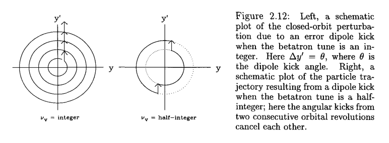

Show code cell source
from map2D import map2D
import numpy as np
import matplotlib.pyplot as plt
#from matplotlib import animation
#from IPython.display import HTML
%matplotlib widget
plt.rcParams.update({'font.size': 12})
---------------------------------------------------------------------------
ModuleNotFoundError Traceback (most recent call last)
Cell In[1], line 1
----> 1 from map2D import map2D
2 import numpy as np
3 import matplotlib.pyplot as plt
File ~/Teaching/Lecture_notes/AP_enotes/book/transverse_BD/perturbation/map2D.py:1
----> 1 import numpy as np
3 class map2D(object):
4 def __init__(self, twiss=[1.0,0.0], tune=0.0, chrom=0.0,
5 npart=1, emit=1e-6, twiss_beam=None, espr=0.0, particles=None):
ModuleNotFoundError: No module named 'numpy'
4. Perturbation of transverse motion#
The Hamiltonian of an unperturbed motion is
Now we assume that the motion is perturbed by \(\Delta \mathbf{B}(s) = \Delta B_x(s) \hat{x}+\Delta B_y(s) \hat{y}\), where
The vector potential becomes:
The Hamiltonian becomes:
Then the Hill’s equation becomes:
If \(\Delta B_y\) is not a function of \(y\), and \(\Delta B_x\) is not a function of \(x\), these two equation remain decoupled. The linear effect of uncoupled case will be introduce in the next two sub-sections. The linear coupled case will be introduced in the last sub-section.
4.1. Perturbed orbit#
The perturbed orbit rises from the dipole errors, which can be contributed from a dipole strength error or a quadrupole misalignment.
4.1.1. Green function of Hill’s equation#
At the present of the dipole error, the general Hill’s equation becomes:
The solution can be retrieved from the Green’s function method. The green function is the solution of:
This shows that a delta function dipole changes the orbit by \(\theta\) at location \(s_0\)
Integrate the function at the vicinity of the \(s_0\) gives:
4.1.1.1. Linac accelerator#
From the linear accelerator, the beam only pass \(s_0\) once. From the transfer matrix from \(s_0\) to \(s_1\)
where \(\psi(s)=\psi(s_1)-\psi(s_0)\). We get the response of the delta dipole error, or the Green’s function (normalized by \(\theta\)) as:
Here, \(H(x)\) is the Heaviside step function.
Then for an arbitrary dipole error distribution \(\frac{\Delta B(s)}{B_0\rho}\), the centroid orbit becomes:
4.1.1.2. Ring accelerator#
In ring accelerator, the beam will pass \(s_0\) many times. There exist a stable orbit, deviate from the reference orbit, due to the dipole error. This is called closed orbit.
In every turn, the beam will have a kick at \(s_0\) described in (4.8). Combined with the one-turn matrix \(M(s_0)\),
Here \(\Phi=2\pi\nu\). we have a closed orbit condition:
Solve the equation, we have:
We know that \(I-M\) is invertabile when \(\det(I-M)=2-2\cos\Phi \ne 0\). Then the closed orbit at \(s_0\) can be easily found as:
Here, the betatron tune is \(\nu\). Then using the transfer matrix (4.9), we get the Green’s function:
Therefore, for an arbitrary dipole error distribution \(\frac{\Delta B(s)}{B_0\rho}\), the closed orbit is simply:
Let’s define the ‘rotating angle’ to \(\phi(s)=\psi(s)/\nu\), then
Therefore:
The advantage of writing the integral using the ‘rotating angle’ is to perform Fourier analysis easily. We can expand:
Then the closed orbit is written as:
Note
We can see clearly that only the harmonic of the error close to the betatron tune will contribute the most on the closed orbit. Therefore, integer tune is not stable under the dipole errors. The above expression can be used to evaluate the stop-band of the integer tune.
We can see clearly that only the harmonic of the error close to the betatron tune will contribute the most on the closed orbit. The following picture shows the comparision of integer and half-integer tune under dipole error.

Example: Dipole errors with one-turn map.
A transverse kick is applied after the one turn map. We may observe the effects of:
Dependence on tune
Conservation of beam size and emittance
Effect of energy deviation, will be detaled later.
dipole_error=map2D(npart=10000, twiss=[2,1], twiss_beam=[2,1],tune=0.02, chrom=3, espr=0e-4)
avex,avep,sizex,sizep,emit=dipole_error.statistics()
emitlist=[]
sizelist=[]
avelist=[]
N_turn=10000
def evolve_func(turns, kick_turn_start=2000, kick_angle=5e-4,
):
for i in range(turns):
if i>=kick_turn_start:
dipole_error.coor2D[1,:]+=kick_angle
dipole_error.propagate()
avex,avep,sizex,sizep,emit=dipole_error.statistics()
avelist.append(avex)
sizelist.append(sizex)
emitlist.append(emit)
yield dipole_error.coor2D
evolve=evolve_func(N_turn+2)
#fig,ax=plt.subplots()
for i in range(N_turn):
arr=next(evolve)
fig1,(ax1,ax2,ax3)=plt.subplots(3,1, sharex= True)
ax3.set_xlabel("Turns")
ax1.set_ylabel("Centroid [mm]")
ax2.set_ylabel("Beam size [mm]")
ax3.set_ylabel("Emit. [mm mrad]")
ax1.plot(np.array(avelist)*1e3)
ax1.set_ylim([-10,10])
ax2.plot(np.array(sizelist)*1e3)
ax2.set_ylim([0,3])
ax3.set_ylim([0,4])
ax3.plot(np.array(emitlist)*1e6)
fig1.tight_layout()
4.2. Perturbed Tune#
The gradient error of the quadrupole contribute to the perturbation of the betatron tune. Similar to the dipole errors, we start from the delta function response:
We can easily find the tune change from the perturbed matrix as
Treat the tune change to be small, therefore the phase advance change is given by
Note
Note that the phase advance change is actually nonliear, especially when the perturned tune is approaching 0 or 0.5 as shown below.
Show code cell source
tunelist=[0.05,0.1,0.2,0.3, 0.4, 0.45]
kdsbeta=np.linspace(0,3,100)
fig, ax=plt.subplots(figsize=(8,6))
for tune in tunelist:
trace = 2.0 * np.cos(2.0 * np.pi * tune) - kdsbeta * np.sin(2.0 * np.pi * tune)
mask= np.abs(trace/2.0)<=1
tuneshift = np.arccos(trace[mask]/2.0) / (2.0 * np.pi) - tune
line=ax.plot(kdsbeta[mask], tuneshift, label=f"Unperturned Tune={tune}")
trace = 2.0 * np.cos(2.0 * np.pi * tune) + kdsbeta * np.sin(2.0 * np.pi * tune)
mask= np.abs(trace/2.0)<=1
tuneshift = np.arccos(trace[mask]/2.0) / (2.0 * np.pi) - tune
ax.plot(kdsbeta[mask], tuneshift, color=line[0].get_color(), linestyle="--", )
ax.set_xlabel(r"Kick strength $\beta k ds$")
ax.set_ylabel(r"Tune shift $\Delta \nu $")
ax.set_xlim([0,3])
ax.set_ylim([-0.2,0.2])
l=ax.legend()
Therefore the tune shift of entire ring is just:
Consider the location \(s_1\), the one turn matrix can be found as:
The change of \(m_{12}\) element of \(M(s_1)\) is:
The change of the beta function at \(s_1\) is simply:
Therefore the beta function error gives:
Follow the same procedure as in the orbit error with transformation (4.18), we can define the Fourier sequence of the quad errors:
we have beta beat as:
Note
Half integer tune is not stable under the quadrupole errors. The above expression can be used to evaluate the stop-band of the half integer tune.
Example: Quad errors with one-turn map.
A quadrupole error is applied after the one turn map.
Show code cell source
quad_error=map2D(npart=10000, twiss=[1,1], twiss_beam=[1,1],tune=0.525, chrom=3.0, espr=0.0e-4)
avex,avep,sizex,sizep,emit=quad_error.statistics()
emitlist=[]
sizelist=[]
avelist=[]
N_turn=6000
def evolve_func(turns, kick_turn_start=1000, df=4*np.pi*1.0e-2):
for i in range(turns):
if i>=kick_turn_start:
quad_error.coor2D[1,:]+=df*quad_error.coor2D[0,:]
quad_error.propagate()
avex,avep,sizex,sizep,emit=quad_error.statistics()
avelist.append(avex)
sizelist.append(sizex)
emitlist.append(emit)
yield quad_error.coor2D
evolve=evolve_func(N_turn+2)
for i in range(N_turn):
arr=next(evolve)
fig1,(ax1,ax2,ax3)=plt.subplots(3,1, sharex= True, figsize=(8,10))
ax3.set_xlabel("Turns")
ax1.set_ylabel("Centroid [mm]")
ax2.set_ylabel("Beam size [mm]")
ax3.set_ylabel("Emit. [mm mrad]")
ax1.plot(np.array(avelist)*1e3)
ax1.set_ylim([-2,2])
ax2.plot(np.array(sizelist)*1e3)
ax2.set_ylim([0,10])
ax3.set_ylim([0,2])
ax3.plot(np.array(emitlist)*1e6)
fig1.tight_layout()